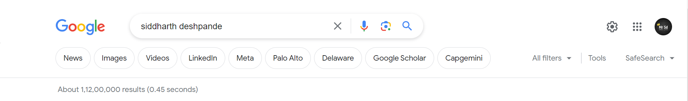

YouHaveReachedsiddharthdeshpande
EXPERIENCE
Experience:
Personal Assistant to Professor |CSIT,durg
March 2021 - Present
Collaborated closely with Professor jayant Rajpurohit, a renowned expert in the field of hardware programming, providing comprehensive administrative support and technical assistance.
Assisted in the development and implementation of hardware programming projects, including designing and coding firmware for embedded systems and microcontrollers
htpps://project.com
PROJECT
personal Assistant with C Programming
Developed a personal assistant application using C programming language to assist users with various tasks.
Implemented voice recognition and speech synthesis functionalities using external libraries, enabling voice-based interaction
E-cell Website for College
help a team in developing a dynamic website for the Entrepreneurship Cell (E-cell) of our college using HTML, CSS, and JavaScript.
Designed an intuitive user interface to showcase E-cell events, resources, and opportunities for aspiring entrepreneurs
Email Verification Tool with Go Lang
Developed an email verification tool using the Go programming language to validate the authenticity and deliverability of email addresses.
Utilized Go's standard library and built-in packages to implement email syntax checks, domain verification, and SMTP communication.
htpps://scholar.google.com
EDUCATION
I am a B.Tech student pursuing my 3rd year at Shri Shankaracharya Technical Campus With a academic background, including Higher Secondary Certificate (12th Grade) - 84%
Secondary School Certificate (10th Grade) - 60% ,I am passionate about technology and have completed various Python and web development projects. Seeking opportunities to further enhance my skills and contribute to the field of technology and engineering
https://:skills//mine.com
SKILLS
Soft Skills: Communication, Time Management, Listening, Problem Solving.
Technical Skills: Python, C, Java, Golang, C++, HTML, CSS.
Additional Skills: Data Structures and Algorithms, Operating Systems.
https://www.hobies.mine.com
HOBBIES
playing vollyball, coding , learning different languages travelling . cooking . playing guitar